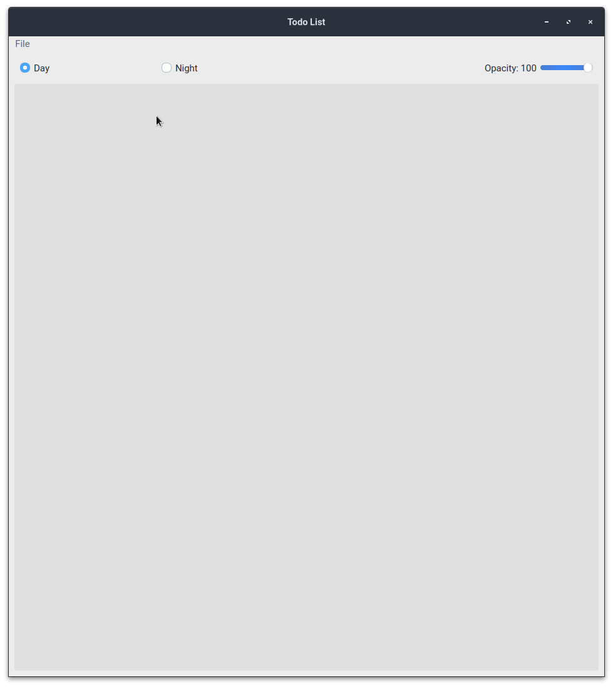

Todo List Users Manual¶
todo_six is a Todo list application within in the Python3 language using the PyQt6 library, hence the name todo_six. This application allows a user to manager multiple todo lists ina single application, and also allows the user to view not only view their recently completed tasks, but any tasks completed within specific time frames. Furthremore, the user can also review their todo tasks and completed tasks on any date they wish. Most important, unlike other applications that store data on the cloud, this application stores all data locally in SQLite databases, which protects their privacy.
Login Screen¶
When a user opens the todo_six application, it loads a landing page that has basic functionality. As you can see from Figure XX, the login screen contains a radio button that allows the user to choose a day theme or a night theme. In addition, the user can control the opacity of the application with a slider.
Create and Open a List¶
On Windows and Linux machines, the menu bar will appear attached to the top of an application. However, on Macintosh platforms it will appear at the top of the screen, detached from the application.
A user can create a new list by clicking File > New. This will open up a
window that prompts the user to navigate the the directory where they want
to createa a todo database. The user can then enter the name of the database,
click Save, and the empty todo list will be saved to the user defined directory.
Once the database has been created, the screen will be populated with a tab containing all buttons that allow a user to enter a task into the entry field, and then to the todo list and completed list.
THe user can also open an existing database via File > Open. The application will
allow a user to create and open multiple tabs at any one time. Each tab will be
associated with a new database.
Close the Application¶
A user can close the application in one of several ways. The user can click on the X icon on the right side
of the tab, which will safely close the database associated with that task list and then close the tab.
The user can also Navigate to File > Close which will safely close all databases, and then close
each tab. Finally, the user can click the X icon at the top right of the application, which will
safely close each database, all tabs, and then exit the application.
Calendar Options¶
When a database todo list is launched, the date in the bottom right hand corner of the application should be the current date, and teh bottom left hand option should be Day. If the user toggles the lower left hand time frame option to another value, which could be Week, Month, ‘Year, or All, the application will show all tasks that were completed within the previous work week of the listed date, the previous month, going back to the first of the month, the previous year, going back to the first of the year, or all tasks that have been completed.
The user can also select the date on the bottom right hand of the screen. This will produce a calendar widget that will allow a user to select any date ranging from the earliest date a task was entered to the current date. If the user selects a date that is different than the current date, all buttons and entry fields will be de-activated, as the user can only view past tasks, but can not change them. The use of this feature will show a user all tasks that were in work and completed within the drop down menu time frame of the selected date.